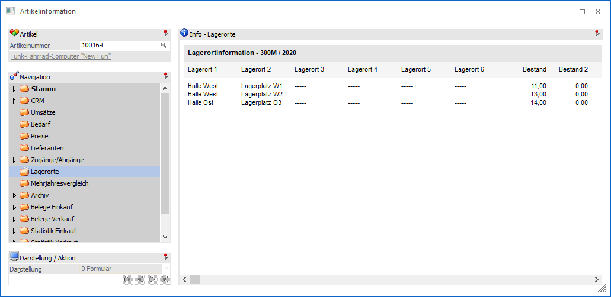
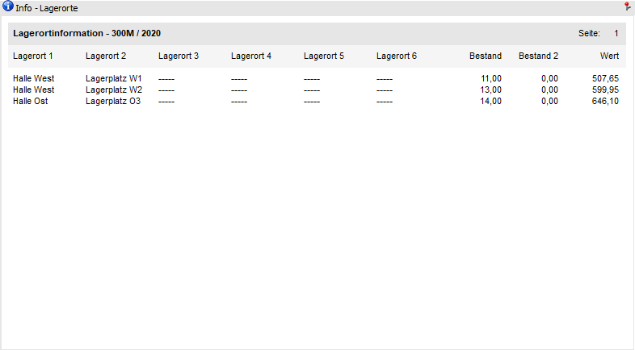
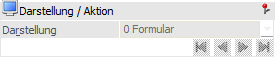

In dem Bereich "Lagerorte" werden die Lagerorte mit Bestand für den ausgewählten Artikel ausgewiesen.

Der Bereich "Lagerorte" besteht aus den folgenden Info-Elementen:
ü Info - Lagerorte
ü Selektion
Info - Lagerorte

An dieser Stelle werden die Lagerorte des Artikels, welche einen Bestand aufweisen, dargestellt.
Darstellung / Aktion

Ø VCR-Buttons
Sollte die Anzeige der Lagerorte über mehrere Seiten dargestellt werden, so kann mit Hilfe der VCR-Buttons zwischen den einzelnen Seiten gewechselt werden.